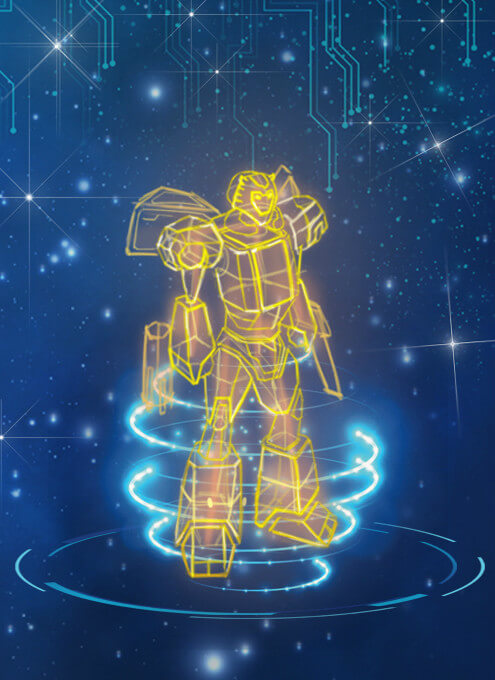

游戏介绍
守卫先锋用于保护您的士兵生产不被这个世界所影响。 如果您没有时间时刻关注您的兵工厂，没有关系，我们都给你想到了。 您可以通过商城购买宝石或者集结士兵的时候随机获得到宝石， 那么这些宝石可以激活下面的守卫先锋，一起来看看吧。
-
名称：指挥官 介绍：保障兵营稳定工作，减少故障 兑换：黄宝石x5(有效期48小时)
-
 名称：补给员 介绍：保障兵营不会能源匮乏 兑换：紫宝石x5(有效期48小时)
名称：补给员 介绍：保障兵营不会能源匮乏 兑换：紫宝石x5(有效期48小时) -
名称：统领 介绍：保障兵营不受外敌危害 兑换：蓝宝石x5(有效期48小时)
-
名称：巨人 介绍：保障产兵数量最大化 兑换：绿宝石x5(有效期48小时)
-
名称：狂信徒 介绍：创造特色兵种，但必须放弃其他士兵 兑换：基地等级达到6级以上（包含6级）才可以激活
守卫先锋是由宝石兑换激活，不同宝石激活不同的守卫先锋。都有哪些宝石呢？
我们如何得到宝石呢？请参考下面的表格。
| 名称 | 激活守卫先锋 | 获取方式 | |
|---|---|---|---|
| 绿宝石 | 巨人 | 随机获得 | |
| 紫宝石 | 补给员 | 随机获得、商店购买 | |
| 蓝宝石 | 统领 | 随机获得、商店购买 | |
| 黄宝石 | 指挥官 | 随机获得、商店购买 | |
| 迅影、克罗 羽刃、亚特 |
狂信徒 | 神机营随机获得 |